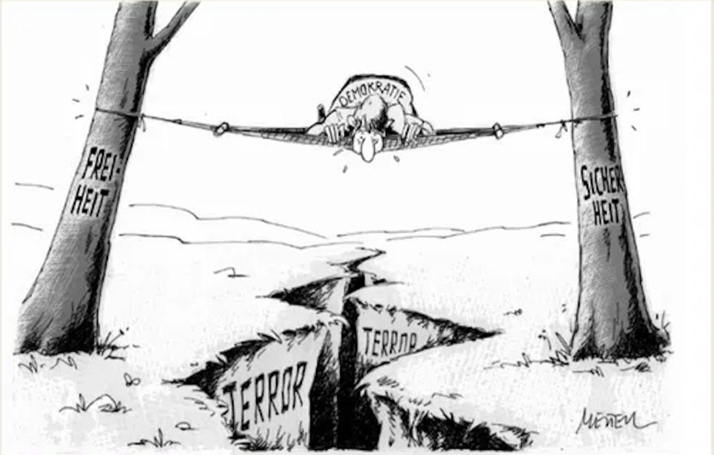

Die fett gedruckten Wörter in den Aufgaben sagen dir, wie du antworten sollst. AFB = Anforderungsbereich (I leicht, II mittel, III anspruchsvoll).
Seit der Wiedervereinigung steht die Demokratie unter Druck: rechte Gewalt von Rostock über den NSU bis Halle und Hanau, dazu der internationale Terrorismus seit dem 11. September 2001. In vier Stationen prüfst du, wie der Staat reagiert hat – mit Gesetzen, Verboten und Prävention – und beurteilst am Ende selbst, wo die Grenzen einer wehrhaften Demokratie liegen.

So arbeitest du: Lies die Darstellungstexte und schau dir die Materialien an. Jede Aufgabe trägt oben den Hinweis, zu welchem Material sie gehört. Freitext-Antworten werden erst freigeschaltet, wenn du selbst ausführlich geantwortet hast (mehrere Sätze). Bei den Videos steht jeweils, welchen Abschnitt du schauen sollst – schau wirklich nur diesen Teil, damit du die Station in der vorgesehenen Zeit schaffst. Unten rechts findest du jederzeit die Operatoren-Hilfe: Dort steht, was „nenne“, „erläutere“, „beurteile“ usw. genau verlangen.
Nach dieser Lernstation kannst du …
💡 Hilfe gefällig? Unten rechts schwebt der Button „📘 Operatoren-Hilfe“ – immer sichtbar. Klick ihn an, wenn du nicht weißt, was ein Operator von dir verlangt. Bei jeder Aufgabe findest du außerdem unten einen Hinweis „Hilfe / Tipp“ und – wenn du schnell fertig bist – eine Erweiterungsaufgabe.
Klicke jede Karte an, um die Definition aufzudecken. Diese Begriffe brauchst du im ganzen Modul.
Decke immer zwei Karten auf und finde die passenden Paare aus Begriff und Kurzdefinition. Ein Paar bleibt offen, wenn es zusammengehört. So prüfst du, ob du die Begriffe wirklich verstanden hast.
Von Rostock-Lichtenhagen über den NSU bis Halle und Hanau.
Die Jahre nach der Wiedervereinigung, besonders 1991 bis 1994, waren von rechtsextremer Gewalt geprägt. Angegriffen wurden Menschen mit Migrationsgeschichte, Asylsuchende, Sinti und Roma, Obdachlose, Menschen mit Behinderung, Homosexuelle und politische Gegner. Trauriger Höhepunkt waren pogromartige Ausschreitungen und Brandanschläge auf Wohnhäuser. Wer die freiheitlich-demokratische Grundordnung gewaltsam beseitigen will und sich am historischen Nationalsozialismus orientiert, gilt als rechtsextrem; planmäßige Gewalt zu diesem Zweck nennt man Rechtsterrorismus.
Vor der überfüllten Zentralen Aufnahmestelle für Asylbewerber und dem „Sonnenblumenhaus“, in dem vietnamesische Vertragsarbeiter lebten, sammelten sich am 22. August 1992 rund 2000 Menschen. Etwa 200 bewarfen das Gebäude mit Steinen, später mit Molotowcocktails; zahlreiche Schaulustige applaudierten. Die Polizei war unterbesetzt und zog sich zeitweise zurück, sodass der Mob das Haus stürmen konnte. Die Eingeschlossenen retteten sich knapp über das Dach.
Rostock-Lichtenhagen war kein Einzelfall, sondern Teil einer Welle: Schon 1991 hatte es in Hoyerswerda pogromartige Angriffe gegeben; 1992 folgte der Brandanschlag von Mölln, 1993 der von Solingen mit fünf Toten. Diese Taten richteten sich vor allem gegen Menschen mit türkischer Migrationsgeschichte und gegen Asylunterkünfte. Die Bilder vom applaudierenden Publikum in Rostock gingen um die Welt und gelten als Symbol für das Versagen von Staat und Gesellschaft in den frühen 1990er-Jahren.
Das Foto M 1 zeigt das brennende „Sonnenblumenhaus“ und die Menge davor. Beschreibe, was zu sehen ist, und erläutere, warum gerade dieses Bild zum Symbol für rechte Gewalt der 1990er-Jahre wurde. Denk an: Tatort, Rolle der Schaulustigen, Wirkung der Bilder in den Medien.
Beschreibung: Das Foto zeigt das nächtliche „Sonnenblumenhaus“ in Rostock-Lichtenhagen, aus dessen Fenstern Flammen und Rauch schlagen. Davor steht eine große Menschenmenge; Einsatzkräfte sind zu erkennen. Die Szene wirkt chaotisch und bedrohlich.
Symbolwirkung: Das Bild wurde zum Symbol, weil es mehrere Dinge zugleich zeigt: die offene rassistische Gewalt gegen eine Asylunterkunft und ein Wohnheim vietnamesischer Vertragsarbeiter, das zustimmende oder schaulustige Publikum (bis zu 3000 Menschen), das die Täter anfeuerte, und das Versagen von Polizei und Behörden, die die Lage zeitweise nicht unter Kontrolle hatten. Über das Fernsehen gingen die Bilder bundesweit und international und machten das Ausmaß fremdenfeindlicher Gewalt nach der Wiedervereinigung sichtbar. Rostock-Lichtenhagen gilt seitdem als Wendepunkt und Initialzündung einer ganzen Welle rechtsextremer Gewalt. (vgl. Buch S. 270, M 1)
Arbeite aus der Aussage von Wolfgang Richter heraus, welche Vorwürfe er gegenüber Politik und Polizei erhebt. Begründe mit konkreten Hinweisen aus dem Zitat.
Richter wirft den Behörden vor, die Gewalt vorhersehbar gewesen sei und trotzdem nichts unternommen worden sei: Ein anonymer Anrufer kündigte Tage vorher an, man werde „für Ordnung sorgen“ – die Drohung war also bekannt. Außerdem kritisiert er die massive Unterbesetzung der Polizei: Rund 25 Beamte standen etwa 100 gewaltbereiten Angreifern gegenüber, dazu Tausende Schaulustige. Die Politik habe versichert, die Lage ernst zu nehmen, aber faktisch nichts getan. Der Vorwurf lautet also: Versagen durch Untätigkeit und Fehleinschätzung, obwohl die Eskalation absehbar war. (vgl. Buch S. 273 f., M 5)
Die Terrorgruppe „Nationalsozialistischer Untergrund“ bestand im Kern aus Uwe Mundlos, Uwe Böhnhardt und Beate Zschäpe aus Jena, die 1998 untertauchten. Zwischen 2000 und 2007 ermordete der NSU neun Kleinunternehmer mit Migrationsgeschichte sowie die Polizistin Michèle Kiesewetter und verübte Sprengstoffanschläge. Jahrelang verdächtigten Behörden die Opferfamilien selbst und sprachen abwertend von „Dönermorden“. Erst im November 2011 wurde der rechtsterroristische Hintergrund öffentlich. 2018 wurde Beate Zschäpe zu lebenslanger Haft verurteilt.
Der NSU-Komplex gilt als einer der größten Skandale der Nachkriegszeit. Polizei und Verfassungsschutz ermittelten jahrelang in die falsche Richtung, vermuteten organisierte Kriminalität statt eines rassistischen Motivs, und mehrere Untersuchungsausschüsse deckten gravierende Behördenfehler auf. Für die Aufarbeitung bedeutete der NSU eine Zäsur: Seitdem wird rechte Gewalt deutlich ernster genommen.
Beschreibe den Verlauf der rechtsextremen Straftaten (zwei Wellen) und erläutere einen historischen Grund für den starken Anstieg Anfang der 1990er-Jahre. Lies die genauen Zahlen im Original-Diagramm M 2 im Buch (S. 271) ab. Schritt 1: Verlauf beschreiben (Wellen, Spitzen). Schritt 2: einen Grund nennen und erklären.
Der Verlauf zeigt zwei Anstiegswellen: einen starken Anstieg in den frühen 1990er-Jahren (Höhepunkt etwa 1992/93) und einen erneuten Anstieg in den 2000er-Jahren; die rechtsextremen Gewalttaten bilden dabei durchgehend einen Teil der Gesamtstraftaten. Zwischendurch (Mitte/Ende der 1990er) gehen die Zahlen etwas zurück, bleiben aber hoch. (Die genauen Jahreswerte stehen im Buch-Diagramm M 2.)
Grund für die erste Welle: die gesellschaftliche Verunsicherung nach der Wiedervereinigung und die steigende Zuwanderung – u. a. infolge der Jugoslawienkriege –, die fremdenfeindliche Einstellungen verstärkte. Das zeigte sich in Pogromen wie Hoyerswerda (1991) und Rostock-Lichtenhagen (1992). (vgl. Buch S. 271 oben & M 4, S. 273)
Der Rechtsterrorismus endete nicht mit dem NSU. Am 9. Oktober 2019 versuchte ein Rechtsextremist am höchsten jüdischen Feiertag Jom Kippur, schwer bewaffnet in die Synagoge in Halle einzudringen, in der sich 51 Menschen befanden. Als ihm das nicht gelang, erschoss er vor dem Gebäude eine Passantin und kurz darauf einen Mann in einem Imbiss. Der Täter wurde zu lebenslanger Haft mit Sicherungsverwahrung verurteilt. Am 19. Februar 2020 ermordete ein Rechtsterrorist in Hanau innerhalb weniger Minuten neun Menschen mit Migrationsgeschichte, danach seine Mutter und sich selbst. Sechs weitere Menschen wurden verletzt.
Beide Taten zeigten dieselben Muster wie schon beim NSU: ein rassistisches bzw. antisemitisches Motiv, ein radikalisierter Einzeltäter mit Online-„Manifest“ und Behördenfehler, die später in Untersuchungsausschüssen aufgearbeitet wurden. Halle führte bundesweit zu besserem Schutz jüdischer Einrichtungen; nach Hanau brachte die Bundesregierung Ende 2020 ein Maßnahmenpaket gegen Rechtsextremismus und Rassismus auf den Weg.
Ferhat Unvar (1996–2020) wuchs als Kind kurdischer Eltern in Hanau auf, hatte gerade seine Ausbildung zum Heizungs- und Gasinstallateur abgeschlossen und wollte eine eigene Firma gründen. Er traf sich am Abend des 19. Februar 2020 mit Freunden, als der Täter den Kiosk an der Arena-Bar stürmte. Ferhat Unvar wurde 23 Jahre alt. Seine Mutter, Serpil Temiz Unvar, gründete später die Bildungsinitiative Ferhat Unvar, die junge Menschen über Rassismus aufklärt – nach dem Leitsatz, den ihr Sohn hinterließ: „Tot sind wir erst, wenn man uns vergisst.“
Bearbeite alle drei Teile in einem zusammenhängenden Text:
(1) Beschreibe kurz, wer Ferhat Unvar war und was sein Schicksal über die Opfer rechter Gewalt zeigt.
(2) Arbeite aus den beiden Zeitzeugen-Stimmen die gemeinsame Forderung an Staat und Gesellschaft heraus.
(3) Erläutere, was Halle (2019) und Hanau (2020) mit der NSU-Mordserie gemeinsam haben.
(1) Ferhat Unvar: Er wurde 1996 als Kind kurdischer Eltern in Hanau geboren, hatte gerade seine Ausbildung zum Installateur abgeschlossen und wollte eine eigene Firma gründen, als er am 19. Februar 2020 mit 23 Jahren ermordet wurde. Sein Fall zeigt, dass die Opfer rechter Gewalt mitten aus der Gesellschaft stammen – junge Menschen mit Plänen und Zukunft, die allein wegen ihrer (zugeschriebenen) Herkunft getötet wurden.
(2) Gemeinsame Forderung: Beide fordern Anerkennung der Opferperspektive und präventive Bildungsarbeit – Betroffene sollen gehört statt verdächtigt werden, und die Auseinandersetzung mit Rassismus und der Migrationsgesellschaft soll fest im Bildungssystem verankert werden. Aufarbeitung bedeutet also nicht nur Strafverfolgung, sondern Erinnerung, Bildung und Solidarität.
(3) Gemeinsamkeiten mit dem NSU: rassistisches bzw. antisemitisches Motiv; radikalisierte Täter; das anfängliche Verkennen oder späte Anerkennen der Taten; Behördenfehler, die später in Untersuchungsausschüssen aufgearbeitet wurden. Halle und Hanau zeigen, dass Rechtsterrorismus kein abgeschlossenes Kapitel der 1990er ist. (vgl. Buch S. 274, M 6; Abschnitt Halle/Hanau)
Wann wurde der rechtsterroristische Hintergrund der NSU-Mordserie öffentlich bekannt?
Richtig ist 2011: Nach dem Tod von Mundlos und Böhnhardt am 4. November 2011 und dem Bekennervideo wurde die Mordserie dem NSU zugeordnet. 2018 fiel lediglich das Gerichtsurteil (lebenslange Haft für Zschäpe).
Wie 9/11 das globale Ausmaß der Bedrohung sichtbar machte – und Deutschland betraf.
Material M7 · Text (Buch S. 271, „Islamistischer Terror“)
Am 11. September 2001 entführten islamistische Terroristen vier Flugzeuge in den USA; zwei steuerten sie in die Türme des World Trade Centers in New York, eines ins Pentagon, ein viertes stürzte nach dem Widerstand der Passagiere ab. Insgesamt starben rund 2 996 Menschen, darunter elf Deutsche. Die Anschläge zeigten das globale Ausmaß islamistisch-terroristischer Bedrohung. In den Ermittlungen wurde bekannt, dass die Täter Teile ihrer Planung auch von Deutschland aus koordiniert hatten (Hamburger Terrorzelle).
9/11 machte sichtbar, dass der internationale Terrorismus aus dem Verborgenen operiert: Die Täter verstecken sich, sind über Ländergrenzen vernetzt und schlagen überraschend zu. Mit klassischen militärischen Mitteln ist diese Bedrohung kaum zu fassen. Als bekannt wurde, dass viele Attentäter in Afghanistan ausgebildet und von der dortigen Taliban-Regierung gedeckt worden waren, beschloss der UN-Sicherheitsrat ein militärisches Eingreifen. Es begann der weltweite „Krieg gegen den Terror“ – mit weitreichenden Folgen bis heute, darunter dem ISAF-Einsatz der Bundeswehr in Afghanistan.
Material M7 · Text (Buch S. 271/272, Deutschland als Ziel)
Auch die Bundesrepublik war Ziel: 2006 scheiterten Anschläge auf Regionalzüge in Hamm und Koblenz (die „Kofferbomben“ zündeten nicht), 2007 wurde ein Sprengstoffanschlag der „Sauerland-Gruppe“ verhindert. Begründet wurde dies in Propagandavideos oft mit der deutschen Beteiligung am internationalen Kampf gegen den Terror nach 2001. Damit verschob sich die Bedrohung von einem rein „fernen“ Ereignis hin zu einer konkreten Gefahr im eigenen Land.
Deute die Waage-Karikatur: Was sagt sie über die Folgen von 9/11 für das Verhältnis von Freiheit und Sicherheit aus?
Die Waage symbolisiert das Gleichgewicht zwischen Freiheit und Sicherheit. Nach 9/11 senkt sich die Seite „Sicherheit“ tief nach unten, während „Freiheit“ nach oben „abhebt“ und an Gewicht verliert. Aussage: Aus Angst vor weiteren Anschlägen reagierten Staaten mit immer mehr Sicherheitsgesetzen und Überwachung – auf Kosten der bürgerlichen Freiheiten. Die Karikatur kritisiert, dass die Balance verloren geht und Grundrechte unter Druck geraten. (Verbindung zu Buch S. 276, M 11)
Erkläre, warum 9/11 oft als „Zeitenwende“ bezeichnet wird – und inwiefern die Anschläge auch Deutschland direkt betrafen.
Zeitenwende: 9/11 machte sichtbar, dass Terrorismus global, vernetzt und aus dem Verborgenen heraus operiert und sich mit militärischen Mitteln kaum bekämpfen lässt. Die Folge war der weltweite „Krieg gegen den Terror“, Auslandseinsätze (u. a. Afghanistan) und eine Welle neuer Sicherheitsgesetze. Deutschland-Bezug: Unter den Toten waren elf Deutsche; Teile der Anschlagsplanung liefen über die Hamburger Zelle; und Deutschland wurde dadurch selbst zur Zielscheibe (Sauerland-Gruppe 2007, Kofferbomben Hamm/Koblenz 2006). (vgl. Buch S. 271 & S. 272)
Welche Gruppe plante 2007 einen verhinderten Sprengstoffanschlag in Deutschland?
Die Sauerland-Gruppe plante im Auftrag der „Islamischen Dschihad-Union“ Anschläge; sie wurde 2007 enttarnt. Der „Kalifatsstaat“ (Metin Kaplan) und der NSU gehören in andere Kontexte. (vgl. Buch S. 271, Randspalte „Sauerland-Gruppe“)
Repression, Prävention – und das Spannungsfeld zwischen Freiheit und Sicherheit.
Material M9–M10 · Text & Zeitleiste (Buch S. 272, 275 f.)
Der Staat reagierte mit einem Mix aus repressiven und präventiven Maßnahmen. Repressiv: Strafverfolgung, Überwachung verfassungsfeindlicher Personen und Verbote extremistischer Organisationen. Nach dem 11. September 2001 verabschiedete der Bundestag mehrere Anti-Terror-Gesetze (Sicherheitspakete I und II), die den Behörden erweiterte Befugnisse gaben. Präventiv: Förderung pädagogischer Arbeit, Aussteiger- und Deradikalisierungsprogramme sowie 2006 die erste Deutsche Islamkonferenz.
Diese Maßnahmen waren in Politik und Gesellschaft umstritten. Denn in einem demokratischen Rechtsstaat bedeutet jede Ausweitung der Sicherheit zugleich eine Einschränkung bürgerlicher Freiheiten. Genau dieses Spannungsverhältnis – Freiheit gegen Sicherheit – ist der Kern der „wehrhaften Demokratie“: Sie verteidigt sich aktiv gegen ihre Feinde, ohne dabei selbst ihre freiheitlichen Grundlagen zu verraten.
Nach der Welle rechter Gewalt; höchst umstritten – Kritiker sahen darin ein Nachgeben gegenüber rechtem Druck.
Vereinsverbote auch für Religions- und Weltanschauungsgemeinschaften möglich, wenn sie sich gegen die verfassungsmäßige Ordnung richten.
Erweiterte Befugnisse, u. a. Datenzugriff bei Fluggesellschaften, Kreditinstituten, Telekommunikation.
Datenaustausch zwischen Polizei und Diensten; Teile später vom Bundesverfassungsgericht (2010/2013) für verfassungswidrig erklärt.
Behörden können ausreisewilligen Islamisten den Personalausweis entziehen; überarbeitete Vorratsdatenspeicherung.
Die Idee der „wehrhaften“ oder „streitbaren Demokratie“ ist eine Lehre aus dem Scheitern der Weimarer Republik. 1933 nutzten die Nationalsozialisten die demokratischen Freiheiten und legalen Wege, um die Demokratie von innen heraus abzuschaffen. Weimar war eine „Demokratie ohne Demokraten“, die sich gegen ihre Feinde nicht verteidigte.
Das Grundgesetz von 1949 zog daraus die Konsequenz: Die Bundesrepublik soll eine Demokratie sein, die sich aktiv gegen ihre Feinde wehren darf. Dazu gehören Instrumente wie das Verbot verfassungsfeindlicher Parteien (Art. 21 GG), die Grundrechtsverwirkung (Art. 18 GG) und die „Ewigkeitsklausel“ (Art. 79 III GG), die den Kern der Verfassung unabänderbar macht. Der Verfassungsschutz beobachtet extremistische Bestrebungen. So soll sich „Weimar“ nicht wiederholen.
Zugleich gilt: Diese Wehrhaftigkeit hat Grenzen. Eine Demokratie, die im Kampf gegen ihre Feinde selbst die Grundrechte abschafft, würde genau das zerstören, was sie verteidigen will. Deshalb wacht das Bundesverfassungsgericht darüber, dass Sicherheitsmaßnahmen verhältnismäßig bleiben.
Arbeite aus dem Text heraus, warum die Bundesrepublik eine „wehrhafte Demokratie“ wurde. Erkläre den historischen Bezug zur Weimarer Republik und nenne zwei konkrete Instrumente, mit denen sich die Demokratie schützen kann.
Historischer Grund: Die „wehrhafte Demokratie“ ist eine Lehre aus dem Scheitern der Weimarer Republik. 1933 konnten die Nationalsozialisten die demokratischen Freiheiten und legale Wege nutzen, um die Demokratie von innen abzuschaffen, weil Weimar sich gegen ihre Feinde nicht verteidigte („Demokratie ohne Demokraten“).
Konsequenz im Grundgesetz (1949): Die Bundesrepublik soll sich aktiv gegen Verfassungsfeinde wehren dürfen, damit sich „Weimar“ nicht wiederholt.
Zwei Instrumente (zwei genügen): Parteiverbot verfassungsfeindlicher Parteien (Art. 21 GG); Grundrechtsverwirkung (Art. 18 GG); Ewigkeitsklausel (Art. 79 III GG); Beobachtung durch den Verfassungsschutz. Grenze: Die Wehrhaftigkeit darf nicht selbst die Grundrechte zerstören – darüber wacht das Bundesverfassungsgericht. (vgl. Text M 9 oben & Buch S. 275 f.)
Analysiere die Karikatur in drei Schritten: (1) Beschreibung, (2) Deutung der Symbole, (3) Aussage des Karikaturisten zur „wehrhaften Demokratie“.
1. Beschreibung: Eine Figur, die die Demokratie verkörpert (an den „deutschen Michel“ erinnernd), balanciert auf einem Seil. Das Seil ist zwischen zwei Bäumen mit den Aufschriften „Freiheit“ und „Sicherheit“ gespannt; darunter klafft ein Abgrund mit der Aufschrift „Terror“.
2. Symbole: Das Seil = der schmale Grat, auf dem sich der Staat bewegt. Die beiden Bäume = die konkurrierenden Werte. Der Abgrund „Terror“ = die Gefahr, wenn die Balance misslingt.
3. Aussage: Freiheit und Sicherheit stehen in einem Spannungsverhältnis. Zu viel Sicherheit beschneidet die Freiheit, zu wenig öffnet dem Terror Raum. Die wehrhafte Demokratie muss dieses Gleichgewicht immer wieder neu justieren, um nicht in den „Abgrund des Terrors“ zu stürzen. (vgl. Buch S. 276, M 11)
Welche Institution hat mehrfach Anti-Terror-Gesetze (z. B. Vorratsdatenspeicherung) eingeschränkt oder gekippt?
Das Bundesverfassungsgericht erklärte 2010 die Vorratsdatenspeicherung und 2013 Teile der Anti-Terror-Datei für verfassungswidrig. Das zeigt die rechtsstaatliche Grenze repressiver Sicherheitspolitik. (vgl. Buch S. 275 f., M 9)
Begründe, warum es kein Widerspruch ist, dass derselbe Staat einerseits immer neue Sicherheitsgesetze erlässt und andererseits das Bundesverfassungsgericht Teile davon wieder kippt. Was sagt das über die „wehrhafte Demokratie“ aus?
Beides gehört zusammen und ist kein Widerspruch, sondern Ausdruck der Gewaltenteilung. Der Gesetzgeber (Bundestag/Regierung) reagiert auf Bedrohungen mit Sicherheitsgesetzen – das ist die „wehrhafte“ Seite: Die Demokratie verteidigt sich aktiv. Das Bundesverfassungsgericht prüft diese Gesetze aber daraufhin, ob sie die Grundrechte verletzen, und kippt sie notfalls (z. B. Vorratsdatenspeicherung 2010). Das ist die rechtsstaatliche Selbstkontrolle: Sicherheit darf nicht grenzenlos auf Kosten der Freiheit gehen. Gerade dass der Staat sich selbst Grenzen setzt, unterscheidet die wehrhafte Demokratie von einem autoritären Überwachungsstaat. Die Balance Freiheit/Sicherheit wird so immer wieder neu justiert. (vgl. Buch S. 275 f., M 9 & M 11)
Beurteile: Sind Verbote extremistischer Organisationen (z. B. das gescheiterte NPD-Verbot) ein wirksames Mittel? Nenne je ein Argument dafür und dagegen.
Dafür: Verbote entziehen extremistischen Gruppen Strukturen, Geld und öffentliche Bühne; der Staat setzt ein klares Signal der Wehrhaftigkeit; Symbole und Publikationen werden untersagt.
Dagegen: Verbote können die Szene in den Untergrund verlagern und radikalisieren (Hasselbach, M 10); sie sind oft bloße „Symbolpolitik“; Verbotsverfahren können – wie beim NPD-Verfahren – an Formfehlern (V-Leute-Problem) scheitern.
Urteil: Vertretbar ist die Position, dass Verbote allein nicht genügen und durch Prävention (Bildung, Aussteigerprogramme wie EXIT) ergänzt werden müssen. (vgl. Buch S. 272 Aufgabe 3a & S. 276, M 10)
Warum die Gefahr nicht Geschichte ist – und was Aufarbeitung heute bedeutet.
Material M13 · Zahlen (Buch S. 272/273)
Nach einem Rückgang in den 2000er-Jahren hat der Rechtsextremismus in den letzten Jahren wieder deutlich an Dynamik gewonnen. 2022 lag das rechtsextremistische Personenpotenzial bei rund 38 800 Personen, davon etwa 14 000 als gewaltorientiert eingestuft; registriert wurden knapp 21 000 rechtsextreme Straftaten, darunter über 1 000 Gewalttaten. Vorläufige Zahlen für 2023 zeigen einen weiteren Anstieg, besonders bei antisemitischen Straftaten. Die aktuellen Werte übertreffen teils sogar die der 1990er-Jahre.
Material M13 · Text (Buch S. 275, M 8)
Beim islamistischen Terrorismus verschob sich die Bedrohung: Laut Verfassungsschutzbericht 2022 geht sie heute vor allem von dschihadistisch motivierten Einzeltätern aus, die mit einfach beschaffbaren Tatmitteln „weiche“ Ziele angreifen. Oft bleibt unklar, ob die Tat aus islamistischer Motivation oder im Zusammenhang mit psychischer Erkrankung erfolgt.
Aufarbeitung heißt mehr als Strafverfolgung. Sie umfasst das Erinnern an die Opfer, die Anerkennung der Betroffenen, zivilgesellschaftliches Engagement (Lichterketten, Initiativen) und Bildungsarbeit. Nach Hanau und Halle entstanden Gedenkorte und Bildungsinitiativen; Angehörige kämpfen bis heute um lückenlose Aufklärung und gegen das Vergessen. Der Leitsatz „Tot sind wir erst, wenn man uns vergisst“ ist zum Motto dieser Erinnerungsarbeit geworden.
Erkläre mit den aktuellen Zahlen, warum die Aussage „Rechtsextremismus ist ein Problem der 1990er-Jahre“ falsch ist.
Die Zahlen widerlegen die Aussage: 2022 wurden knapp 21 000 rechtsextreme Straftaten registriert (über 1 000 Gewalttaten), das Personenpotenzial lag bei rund 38 800, davon ca. 14 000 gewaltorientiert. 2023 stieg vor allem der Antisemitismus stark an. Diese Werte erreichen oder übertreffen das Niveau der 1990er-Jahre. Hinzu kommen die Anschläge von Halle (2019) und Hanau (2020) als jüngste rechtsterroristische Taten. Der Rechtsextremismus ist also kein abgeschlossenes Kapitel, sondern eine aktuelle Bedrohung. (vgl. Buch S. 272 f.)
Von wem geht laut Verfassungsschutzbericht 2022 die islamistische Bedrohung heute vor allem aus?
Die Bedrohung wird heute vor allem durch dschihadistisch motivierte Einzeltäter mit einfach beschaffbaren Tatmitteln gegen „weiche“ Ziele aufrechterhalten. (vgl. Buch S. 275, M 8)
Nach dem Anschlag in Hanau entstand ein Streit über das Gedenken. Wenige Monate nach der Tat schlug ein Lokalpolitiker vor, Hanau solle „zur Normalität zurückkehren“ und die Gedenktafeln mit den Namen der Ermordeten aus der Innenstadt entfernen – etwa auf den Friedhof verlegen. Die Angehörigen widersprachen entschieden.
Begründe, warum es den Angehörigen so wichtig ist, dass das Gedenken im Zentrum der Stadt bleibt und nicht auf den Friedhof verlegt wird. Beziehe dich auf den Unterschied zwischen privater Trauer und öffentlicher Mahnung.
Ein Friedhof ist ein Ort privater, stiller Trauer. Die Angehörigen wollen aber mehr: Das Gedenken soll im öffentlichen Raum sichtbar bleiben, weil es eine politische Mahnung ist. Es soll die Gesellschaft täglich daran erinnern, dass die Tat rassistisch motiviert war und dass rechte Gewalt ein Problem der Mitte der Gesellschaft ist, nicht ein Randphänomen. Eine Verlegung an den Stadtrand würde die Tat unsichtbar machen, sie „normalisieren“ und letztlich verdrängen. Der Leitsatz „Tot sind wir erst, wenn man uns vergisst“ bringt das auf den Punkt: Erinnerung ist Teil der Aufarbeitung und ein Schutz gegen Wiederholung. Aufarbeitung bedeutet hier also nicht nur Strafverfolgung, sondern aktives, öffentliches Erinnern und die Anerkennung der Opferperspektive.
Beurteile: Hat die Bundesrepublik aus den Fehlern der 1990er-Jahre und des NSU für den Umgang mit rechtem Terror gelernt? Wäge Argumente ab und komm zu einem begründeten Urteil. Nutze: Behördenversagen damals ↔ heutige Maßnahmen, aber auch Halle/Hanau und steigende Zahlen.
Dafür, dass gelernt wurde: Nach dem NSU wird rechte Gewalt deutlich ernster genommen; es gibt Untersuchungsausschüsse, Deradikalisierungs- und Aussteigerprogramme (EXIT), nach Hanau ein Maßnahmenpaket mit 89 Punkten, besseren Schutz jüdischer Einrichtungen nach Halle und eine stärkere Anerkennung der Opferperspektive.
Dagegen: Halle (2019) und Hanau (2020) zeigen, dass Einzeltäter weiter unentdeckt radikalisieren; die Zahlen rechtsextremer Straftaten steigen wieder und übertreffen teils die 1990er; bei Hanau gab es erneut Behördenfehler (überlasteter Notruf, Waffenerlaubnis trotz Auffälligkeit). Auch die Anerkennung als rassistische Taten kam oft spät.
Mögliches Urteil: Vertretbar ist, dass teilweise gelernt wurde – die Sensibilität und die Strukturen sind besser, aber strukturelle Probleme (Behördenfehler, Unterschätzung von Einzeltätern, gesellschaftlicher Rassismus) bestehen fort. Ein klares „Ja“ oder „Nein“ wäre zu einfach. (Bezug: gesamtes Modul, v. a. NSU, Halle/Hanau, Zahlen S. 272 f.)
Acht Fragen quer durch das Modul. Antworte ehrlich aus dem Kopf – am Ende siehst du dein Ergebnis.
Dein Ergebnis, die Kernaussagen auf einen Blick und die Downloads.
Bearbeite die Aufgaben – hier erscheint deine Selbstkontroll-Bilanz.
Aufgedeckte Lösungen: 0
Von Rostock-Lichtenhagen (1992) über die NSU-Mordserie (2000–2007) bis Halle (2019) und Hanau (2020): rechte Gewalt ist eine Konstante, kein abgeschlossenes Kapitel der 1990er.
Der 11. September 2001 zeigte das weltweite Ausmaß islamistischen Terrors – mit direktem Deutschland-Bezug (Hamburger Zelle, Sauerland-Gruppe 2007).
Der Staat reagiert repressiv (Verbote, Anti-Terror-Gesetze) und präventiv (Bildung, Aussteigerprogramme) – stets auf dem schmalen Grat der Karikatur von Mester.
Vorratsdatenspeicherung (2010) und Anti-Terror-Datei (2013) wurden teils gekippt: Sicherheit darf die Grundrechte nicht aushebeln.
Strafverfolgung allein genügt nicht. Anerkennung der Opfer, Gedenken und Bildungsarbeit sind zentral – das fordern Betroffene bis heute.
💾 Deine Antworten werden automatisch auf diesem Gerät gespeichert: Wenn du die Seite neu lädst oder schließt und später wieder öffnest, ist alles noch da. Zum Abgeben nutze den Export-Button. „Alles zurücksetzen“ löscht deine Eingaben (z. B. für den nächsten Schüler am selben Gerät).